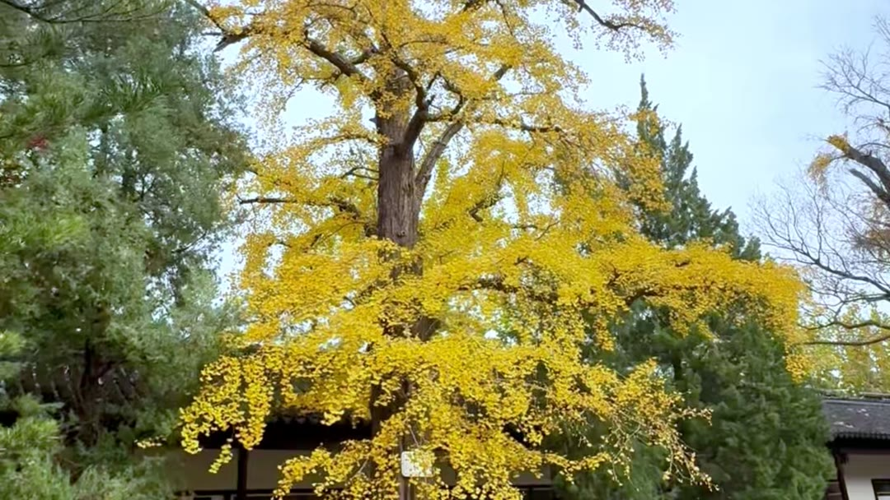

苏州文庙 · 小小研究员集合！
主题：府学文脉 · 范仲淹爷爷创办苏州府学，一起读懂宋代碑刻与千年文庙。全程步行，半日可游。
宋代四大宋碑 · 重点研读《平江图》
🏷️ 镇馆之宝🏷️ 中国最早城市地图
苏州文庙保存国内罕见的宋代四大碑刻：平江图、天文图、地理图、帝王绍运图。其中《平江图》刻于南宋，是中国现存最完整的古代城市石刻地图，完整还原宋代苏州古城的河道、街巷、桥梁、官署、寺庙布局。
楠木大成殿
🏷️ 庙学合一
大成殿为文庙主体建筑，供奉孔子，保留珍贵楠木构件，体量宏大。苏州府学开"庙学合一"之先河——祭祀圣贤与地方教育合二为一，是江南府学的典范。
四大古银杏
🏷️ 文脉活见证

文庙院内古银杏树龄数百年，是文庙活着的历史见证。秋冬之际满树金黄，红墙金叶，氛围极浓。
府学奠基人 · 范仲淹
🏷️ 先忧后乐
北宋景祐二年（1035），范仲淹知苏州，舍宅建学，创办苏州府学，是全国最早的地方官办学校之一。此后苏州文教兴盛、状元辈出，源头便在这座府学文庙。
封子老师讲文庙 · 大成殿前的五棵古银杏

850岁的寿杏、650岁的福杏、雷击后又复活的三元杏、怀抱朴树的连理杏、默默站在角落的灵杏——大成殿前五棵古银杏，每棵都有一段传奇。
本线路全程位于苏州文庙，适合半日亲子 Citywalk：优先看四大宋碑，再参观大成殿、拜范仲淹像；春秋两季银杏季景致最佳，记得带相机！
胥江胥门 · 找到古城的"出生证明"
主题：古城起源 · 伍子胥相土尝水筑阖闾大城；胥江古运河、万年桥、胥门——苏州建城的源头。
苏州最早运河 · 胥江
🏷️ 伍子胥开凿🏷️ 实拍视频胥江，苏州最古老运河，相传由伍子胥主持开凿，连接太湖与胥门，是古代苏州对外水运要道。古人言"太湖东南泄水要道"，千百年来太湖水系经胥江滋养古城。
苏州城市展览馆 · 立体《平江图》
🏷️ 古城沙盘

馆内拥有苏州最大的立体《平江图》沙盘，把宋代石刻平江图做成立体实景模型，街巷河道一目了然。
万年桥的前世今生
🏷️ 繁华图中桥

万年桥，苏州城西知名古桥，横跨胥江。明代始建，历经拆毁、重建，见证胥门码头数百年繁华。


胥门 · 苏州六城门之一
🏷️ 筑城原点

胥门是苏州现存残存古城门之一。公元前 514 年，伍子胥"相土尝水、象天法地"筑阖闾大城，奠定苏州古城两千五百多年的城市框架——胥门正是这场筑城伟业留下的西门。
适合半日亲子 Citywalk，路线顺序：胥江沿岸 → 苏州城市展览馆 → 万年桥 → 胥门。点位集中、步行强度低，推婴儿车也基本无障碍。
报名须知
每组家庭限 一大一小（1名家长＋1名儿童）；如需 两大一小，请提前报备确认。
每团上限 20 组家庭，报满即截止。
适合 小学二年级及以上（建议 8 岁以上）儿童参加。
全程设有 多个有奖竞猜答题关卡，更有彩蛋大奖等着你来夺取！
带队讲师
封子老师
姑苏区老年大学特聘文史讲师 · 苏州本土文旅内容创作者
教师风采，请点这里 →